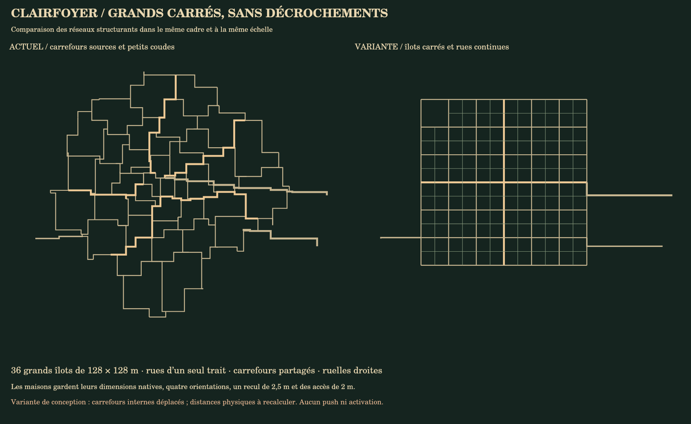
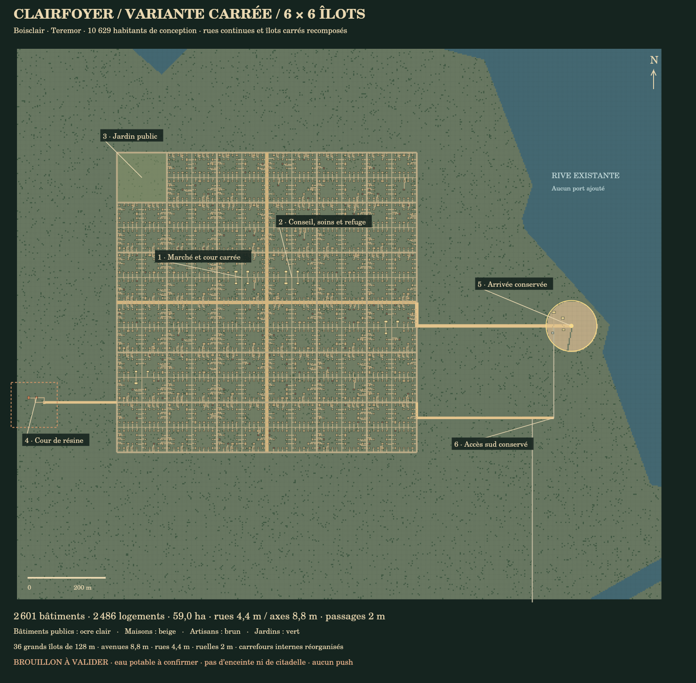
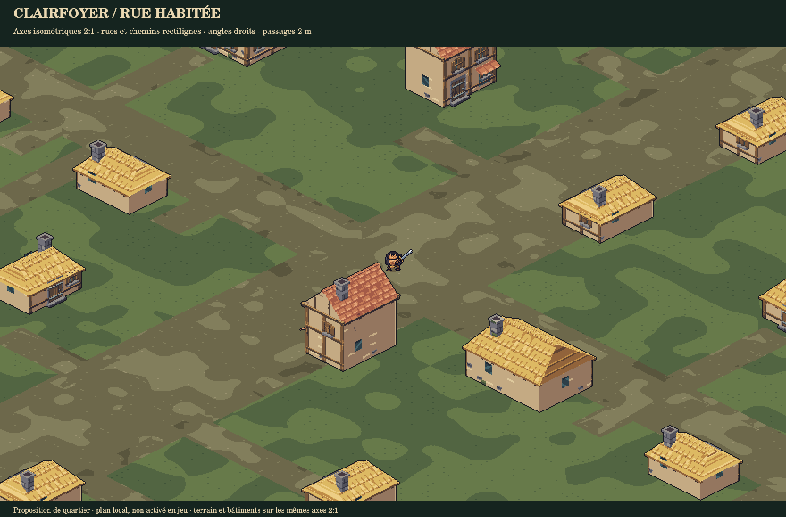
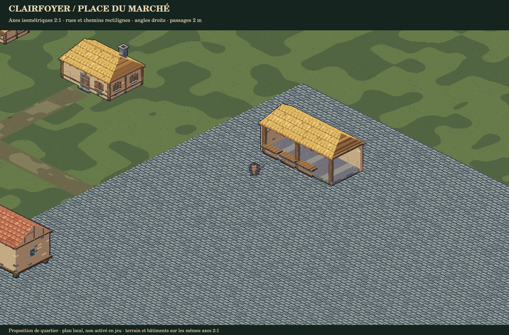

Clairfoyer — variante carrée
6 × 6 îlots de 128 m, voies continues, ruelles droites, sans les petits décrochements de la proposition précédente. 2 601 bâtiments, 2 486 logements, 59,0 ha. Les 10 629 habitants de conception restent comptabilisés.
Cette variante réorganise les carrefours et parcelles internes ; les distances réellement parcourues ne sont pas annoncées comme identiques. Les accès historiques sont conservés. Aucun push ni activation.
Étude des quartiers et de leur identité · Comparer avec les autres propositions · Données de conception · Vérifications



